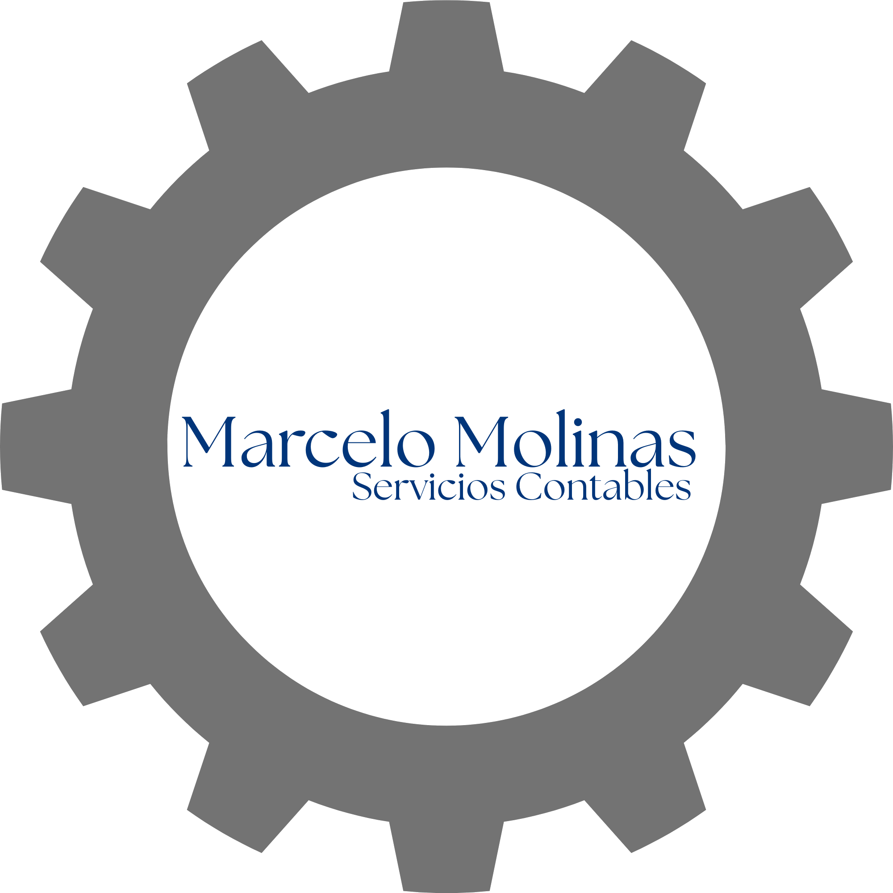

En resumen, los contables se encargan de introducir datos y de realizar la conciliación bancaria, especialmente en el caso de las pequeñas empresas.A
Debido a sus diversas responsabilidades, es importante que considere ambos puestos a la hora de gestionar las finanzas de su empresa.A
Además de minimizar las limitaciones de tiempo, su contable puede ayudarle a garantizar que su empresa cumpla con toda la legislación vigente. Su contable se mantendrá al día de cualquier cambio en las leyes, incluidas las relativas a nóminas e impuestos.A
El impuesto se liquidará mensualmente y se determinará por la diferencia entre el "IVA Débito" y el "IVA Crédito".A
Los Agentes de Retención del IVA deben emitir sus comprobantes mediante el software Tesakã y confirmar la proforma de sus retenciones a través del Formulario Nº 122 en el Sistema Marangatú dentro de los primeros 6 días corridos de cada mes; de lo contrario, la DNIT dará la liquidación por aceptada automáticamente y cargará el monto resultante como saldo definitivo a favor del Fisco.A
Las retenciones del IVA deben pagarse a más tardar el día 7 de cada mes vía pago electrónico o boleta en Marangatú, trasladándose el vencimiento al primer día hábil siguiente si cae en fecha inhábil. Asimismo, se dispone el uso temporal del Comprobante de Retención virtual en reemplazo del de Percepción, y se recuerda que la versión actualizada del software Tesakã está disponible en el sitio web de la DNIT.A
En la exportación de productos agrícolas en estado natural o con un primer proceso de industrialización (como harinas, aceites crudos o pellets), no corresponde la devolución del IVA Crédito por la compra de esos bienes o sus materias primas; sin embargo, los exportadores sí podrán solicitar la devolución del IVA Crédito correspondiente a los demás bienes y servicios que hayan adquirido para afectar directa o indirectamente a dicha operación.A
Tasa del 5%: Se aplica exclusivamente al alquiler de viviendas, la venta de inmuebles, los medicamentos humanos registrados, y a productos esenciales como alimentos de la canasta familiar (arroz, fideos, aceite, leche, etc.), productos agrícolas, hortícolas, frutícolas, así como ganado vivo y sus derivados cárnicos o primarios sin transformar. Tasa del 10%: Se aplica como tasa general para todos los demás casos, bienes y servicios que no estén explícitamente detallados en la lista anterior.A
Regla General: Ocurre lo que pase primero entre la entrega del bien/servicio, el cobro (total o parcial), o el vencimiento del plazo de pago. Servicios Públicos y Telecomunicaciones: Se configura exclusivamente al vencimiento del plazo para el pago de la factura. Importaciones: Nace al momento de numerar la declaración aduanera. Servicios desde el Exterior: Ocurre al momento del pago o al vencimiento del mismo, lo que pase primero. Casos Especiales: En honorarios judiciales nace con el cobro o la emisión de la factura; en autoconsumo, al retirar el bien; en instrumentos financieros, en la fecha de liquidación; y en préstamos/financiaciones, al vencer o cobrarse los intereses y recargos (sin contar el capital).A
Personas Físicas: Quienes presten servicios personales o profesionales de forma independiente, o alquilen inmuebles. Empresas y Entidades: Las empresas unipersonales (incluyendo la venta de sus activos), las sociedades, asociaciones, cooperativas, fundaciones, consorcios de obras públicas y las sucesiones indivisas. Sector Público y Exterior: Las empresas públicas y entes descentralizados que realicen actividades comerciales o industriales, así como las sucursales o agencias de entidades del extranjero que operen en el país. Importadores y Otros: Cualquier importador (ya sea habitual o casual), las Estructuras Jurídicas Transparentes (EJT) y los contribuyentes del Impuesto a los No Residentes (INR).A
Opción voluntaria y permanencia: Se considera opción voluntaria cuando el contribuyente solicita el traslado de régimen después de inscribirse en el RUC. El plazo obligatorio de permanencia de 3 ejercicios fiscales consecutivos se cuenta desde el primer cierre del régimen elegido o asignado de oficio. Definición de Ejercicio Fiscal: Para el IRE SIMPLE, el ejercicio dura 12 meses (del 1 de enero al 31 de diciembre), exceptuando el año de inicio de actividades, la clausura/transferencia de la empresa, o el cambio a otro régimen. En estos casos, se toma el lapso real de actividad. Exceso de ingresos y exclusión: Si los ingresos brutos del contribuyente superan el límite legal del régimen SIMPLE en un año, este tiene la obligación de tramitar el cambio al régimen general. De no hacerlo, la Administración Tributaria realizará el traslado de oficio y aplicará las sanciones pertinentes.A
En la exportación de productos agrícolas en estado natural o con un primer proceso de industrialización (como harinas, aceites crudos o pellets), no corresponde la devolución del IVA Crédito por la compra de esos bienes o sus materias primas; sin embargo, los exportadores sí podrán solicitar la devolución del IVA Crédito correspondiente a los demás bienes y servicios que hayan adquirido para afectar directa o indirectamente a dicha operación.A
Causas de cese definitivo: La obligación de declarar termina por el fallecimiento del contribuyente (asumiendo los herederos o la sucesión las deudas pendientes hasta esa fecha) o por su traslado definitivo al exterior. En ambos casos, se debe gestionar la cancelación del RUC o la actualización de datos. Cese por falta de ingresos (Dos ejercicios): Para suspender la obligación tras acumular dos ejercicios fiscales consecutivos sin superar el rango incidido (según el Art. 62 del Decreto), el cálculo del tiempo incluye el mismísimo primer año en que el contribuyente se inscribió.A